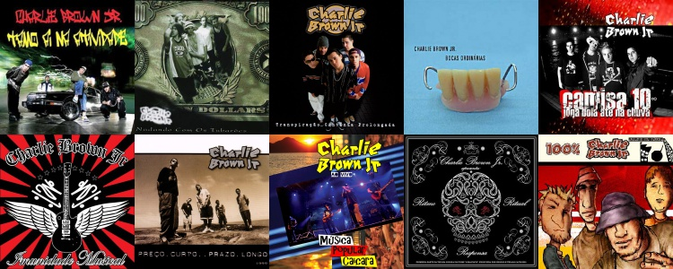

Discografia:
- 1997 – Transpiração Contínua Prolongada
- 1999 – Preço Curto… Prazo Longo
- 2000 – Nadando Com Os Tubarões
- 2001 – 100% Charlie Brown Jr.
- 2002 – Bocas Ordinárias
- 2003 – Acústico MTV
- 2004 – Tamo Ai Na Atividade
- 2005 – Imunidade Musical
- 2007 – Ritmo, Ritual e Responsa
- 2009 – Camisa 10 Joga Bola Até na Chuva
- 2012 – Música Popular Caiçara (Ao Vivo)
- 2013 – La Família 013 (lançamento póstumo)